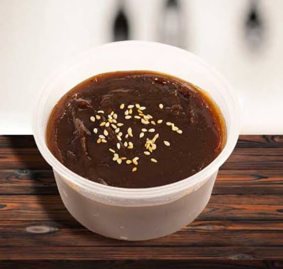

Frijol Colao
Es un dulce típico que se prepara principalmente a base de frijoles negros, y aunque suene inusual usar frijoles en un postre, la combinación de ingredientes le otorga un sabor delicioso y una textura suave.